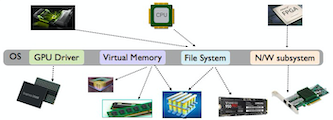
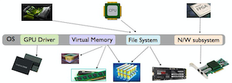

Rutgers Systems Research Lab
Computer Science Department,Rutgers University
Contact: sudarsun.kannanATcs.rutgers.edu
Office: CoRE 313



At Rutgers Systems Research Lab (RSRL), our goal is to build scalable, efficient, secure systems for handling storage and memory heterogeneity. Given the multi-faceted dierences among these technologies, a critical step toward maximizing their impact is to shield applications and upper-level software stacks from the consequent complexity. We work on Operating Systems (OS) for large-scale datacenter and mobile systems. and their implications on Computer Architecture, Distributed Systems, and High-performance Computing systems.
Accelerating Filesystem Checking and Repair with pFSCK
David Domingo, Kyle Stratton, Sudarsun Kannan
Linux Storage and Filesystems Conference (Vault '20) (To appear)
Vacuum: A Flash-Optimized Search Engine
Jun He, Kan Wu, Sudarsun Kannan, Andrea C. Arpaci-Dusseau, Remzi H. Arpaci-Dusseau
FAST 2020 (To appear)
[PAPER]
Durable Transactional Memory Can Scale with TimeStone
R.Madhava Krishnan, Jaeho Kim, Ajit Mathew, Anthony Demeri, Xinwei Fu, Changwoo Min, Sudarsun Kannan
ASPLOS 2020 (To appear)
[PAPER]
Can We Containerize Internet Measurements?
Christopher Misa, Sudarsun Kannan, Ramakrishnan Durairajan
Applied Networking Research Workshop (ANRW'19)
File Systems as Processes.
Jing Liu, Andrea Arpaci-Dusseau, Remzi Arpaci-Dusseau, Sudarsun Kannan
HotStorage 2019
HeteroOS: OS Design for Heterogeneous Memory Management in Datacenters.
Sudarsun Kannan, Ada Gavrilovska, Vishal Gupta, Karsten Schwan
ACM SIGOPS Operating Systems Review - Special Topics, 2019 [PAPER]
Redesigning LSMs for Nonvolatile Memory with NoveLSM.
Sudarsun Kannan, Nitish Bhat, Ada Gavrilovska, Andrea Arpaci-Dusseau, Remzi Arpaci-Dusseau
USENIX ATC 2018